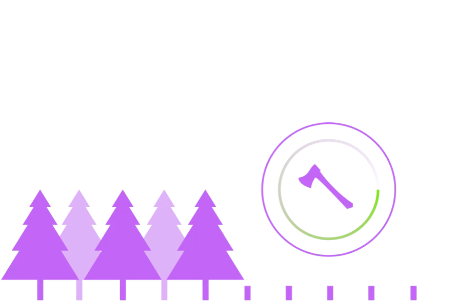
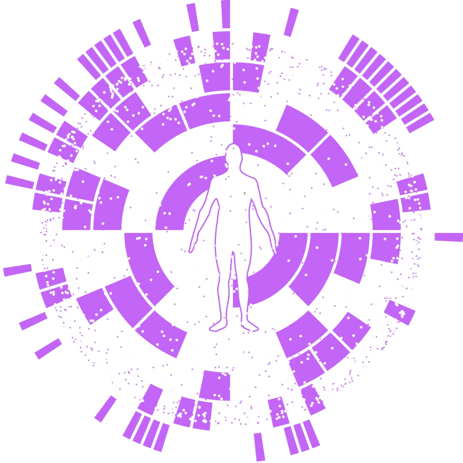

De-Extinction
GIVING NEW MEANING
TO DE-EXTINCTION
The fight to preserve and restore Earth’s diminishing biodiversity is not a problem exclusive to the past. It is a modern problem. And, without intervention, it will pervade our future, too.

- The world’s definition of
de-extinction is flawed. - Colossal is working to remedy the planet, the future and the word itself.
Consider the IUCN Red
List of 42,108 species
across the world
Many are in danger of eradication altogether.
The rapid and accelerating loss of our planet’s biodiversity is as unsettling as it is ubiquitous. And, unlike previous events—which were all caused by natural phenomena—Earth’s sixth mass extinction event is driven solely by human activity. So, although these metrics are deeply concerning, they help illustrate the urgency of Colossal’s mission.
However, there’s hope for a sustainable future. Humankind still has time to reverse the damage we alone have caused, and these efforts are already underway.
As the world’s first and only de-extinction company, Colossal is closer to restoring the past, preserving the present and safeguarding the future than anyone before. To truly illustrate our success, we must not only redefine de-extinction, but establish standards for the science behind it, as well.
YESTERDAY’S
DEFINITION:
DE-EXTINCTION
BY THE BOOK
de-extinction as:
“the process of generating an organism that either resembles or is an extinct species.”
While this simplistic definition of de-extinction may suffice for Wikipedia and the world, it is neither accurate nor comprehensive enough to describe our mission.
For Colossal, de-extinction is not just about making an organism that is or resembles an extinct species. It’s about merging the biodiversity of the past with the innovations of the present in an effort to create a more sustainable future.
Colossal is restoring the extinct species of today to ensure a
brighter tomorrow.
DE-Extinction
REDEFINED
The modern utility of de-extinction is to rebuild extinct species for today that will secure the health and biodiversity of our planet’s future. It is complex, expansive, evolving and entirely new.
Thus, we arrive at a new definition of de-extinction, set forth by the pioneers and innovators at Colossal who continue to define it through their work.
the new
definition of De-extinction
functional de-extinction
[dee-uhk-STINK-shuhn]
noun.
The process of generating an organism that both resembles and is genetically similar to an extinct species by resurrecting its lost lineage of core genes; engineering natural resistances; and enhancing adaptability that will allow it to thrive in today’s environment of climate change, dwindling resources, disease and human interference.
Rebuilding extinct
species today.
de-extinction of
the core genes
Driving the phenotypes (physical characteristics) that have been lost to time in the lineage of the extinct species.
Engineering
Enhancements
Making the species thrive more today like additional genes to help drive success in new climates.
Engineering
Resilience
Engineering resilience to disease or anti-poaching.
This is what we do. This is more than reawakening the past. This is rebuilding the past to be prepared for the future.
Ours is a science focused on hope for all life, regardless of what challenges may lie ahead. This is the dawn of a new day, a step in the right direction, and the true definition of de-extinction—engineered by Colossal.
REBUILDING EXTINCT
SPECIES
FOR EXISTENCE TODAY.

At Colossal,
de-extinction is more than merely making an organism that resembles an extinct species or bringing a lost lineage back to life.
Instead, we are
going farther.
+
We are developing core technologies for the preservation of all species.
+
We are elevating expectations for de-extinction by rebuilding species to be stronger and more resilient than their predecessors.
+
We are repositioning once extinct species to thrive in today’s changing climate and ecosystem.
Applying
the
Science
Colossal’s approach is entirely novel and not one of copying or cloning. Although relevant to many forms of scientific exploration, it is currently impossible to perform full genome synthesis of or clone extinct animals. However, our work paves the way for off-label solutions that will also benefit the at-risk species still alive today.
Our de-extinction efforts with the woolly mammoth are leading to breakthroughs in the fight against elephant endotheliotropic herpesviruses (EEHV)—a highly-dangerous and fatal condition that wreaks havoc in young Asian elephants.
Additionally, our understanding of the climate conditions that initially lead to habitat degradation and isolation of mammoth populations will allow us to revive the species with higher levels of adaptability to a warming planet.
By de-extincting the core genes and engineering the physical characteristics of a lineage lost to extinction, Colossal will equip species with enhanced adaptability to new climates, drought tolerance and resilience against disease.
De-Extinction
Index Key
This is all possible from the combination of de-extincting core genes that made a species unique and enhancing the species by genetically engineering adaptability and resilience to threats that the species may have once faced or could face upon restoration.
A LOOK
AT EXTINCTION
TODAY.
Extinction, as it pertains to biology, is defined as “the dying out or extermination of a species.” This can be caused by a number of factors such as natural disasters, planetary shifts, movements of the sun and stars, human causation or evolution itself.
Of all the root causes of modern extinction, the most concerning and hyperactive factor is that of human causation. Notably, causation from the advent of human civilization and industry. This alone has created a destructive force - within only the last 200 to 300 years - that is accelerating extinction at a pace unimaginable across the entire 4.5 billion year history of Planet Earth.
Evolution as we know it moves incredibly slowly. Massive natural disasters, like a volcanic event or asteroid collision that theoretically claimed the dinosaurs, are extremely rare. This is evidenced through analysis of sedimentary rock and other geological metrics.

For extinction to suddenly skyrocket, there has to be some other force at play. Judging by measurements of carbon in the atmosphere, destruction of ecosystems, pollution, overfishing and hunting, and more, the root cause is identifiably that of human causation. So while the last few centuries have been a boon to the human populace, the rest of Earth’s species, both flora and fauna, are paying the price as a result. At a speed that our planet and all of its inhabitants are quite simply not prepared for.
The loss of species at its natural, evolutionary speed is difficult to define as detrimental. In many ways, the Earth is in control of this process - systematically replacing a defunct species with a more efficient one. This takes millions of years for each instance to occur. In contrast, the loss of species due to human causation is entirely not natural. The loss and its effects are both rapid and dramatic. Because when a species goes extinct due to external human-related factors, there is more than just a loss of a natural gift or a page in a biology text.
Rather, when a species is forcibly removed from existence due to pollutive or aggressive human interference, the loss is more accurately described as the elimination of a key balancing factor within a given delicate ecosystem. Every plant and animal, whether predator or prey, plays a critical role in the sustainability of our planet’s survival systems. When one is removed the entire chain suffers. Research from top scientists, biologists and geologists from around the world is starting to paint the picture in real, hard data. The numbers are staggering.

“I’ve dedicated my career to advancing scientific discovery for future generations. Not only for human beings, but for all species that inhabit our planet.
Colossal represents the intersection of cutting-edge science and entrepreneurial discovery that enacts real change. I am excited to be part of Colossal’s mission and vision for de-extinction and species preservation.”
species per year on average are being driven to extinction.
Per hour
Per day
Per year
could become extinct by 2050.
That the rate of extinction in 2021 is 10,000 times faster because of human activity.
Terrestrial species
declined 36%
81% of freshwater
species disappeared
Marine species
vanished by 36%

The UN has declared that

species are threatened
with extinction.
species of most land
habitats have FALLEN 20%.
SPECIES
since the 16th century.
of amphibians
of reef-forming corals
of all marine mammals
are THREATENED.
The International Union for Conservation of Nature (IUCN) estimates
are on the verge of extinction today.
studied by the IUCN are on the brink of extinction.
are at risk of extinction.
Equally HALF of the globe’s 5,491
mammal species are in decline -
20% in danger of complete extinction.
Only the 6th in the last
The progress and overreaching of human civilization and industry have left a dramatically enormous footprint on the biomes of Earth. Land consumed for resources and the wastes of production decimate landscapes and ecosystems - sometimes within just a few short months. When these treasured, pristine environments are irreversibly harmed, so are the living and breeding grounds of the species - plant and animal - which live there. So it goes without saying that a primary cause of today’s accelerated extinctions are a direct and obvious result of harm to our air, water and land. Research bears this out.
The progress and overreaching of human civilization and industry have left a dramatically enormous footprint on the biomes of Earth. Land consumed for resources and the wastes of production decimate landscapes and ecosystems - sometimes within just a few short months. When these treasured, pristine environments are irreversibly harmed, so are the living and breeding grounds of the species - plant and animal - which live there. So it goes without saying that a primary cause of today’s accelerated extinctions are a direct and obvious result of harm to our air, water and land. Research bears this out.
The IUCN identifies habitat loss as a main threat to 85% OF ALL SPECIES on the Red List.
Panda.org estimates that
OF THE WORLD’S
ORIGINAL FORESTS
Have disappeared.
This is especially disastrous since at least half of earth’s species live in old-growth tropical forests.
At a rate
HIGHER than
possible
regrowth.
This is especially disastrous since at least half of earth’s species live in old-growth tropical forests.
BiologicalDiversity.org states
OF EARTH’S LAND is consumed by human food production.
Up from ONLY
7% in 1700
OF EARTH’S TOTAL LAND MASS has been transformed for human use.
The Intergovernmental
Panel on Climate
Change reports
CO2 concentrations in the atmosphere are higher than at anytime in the last
The problem is beyond massive. The problem is a human one. And the solution is a human one, too. The science of de-extinction.

Our North Star :
De-Extinction
At Colossal, George Church, Ph.D. and a team of world-renowned genetic scientists, are currently pioneering a practical, working model of de-extinction. The team operates at the leading edge of genetic engineering and restorative biology and are currently working on Colossal’s launch project:
Bringing Back the
Woolly MAMMOTH
WITHIN THE NEXT
5 YEARS.
PRESERVATION IS A KEY
COMPONENT OF DE-EXTINCTION.
From the Asian to African elephants, all Elephantidae species
are in trouble due to climate, disease and habitat loss. Colossal
is working to help them now. Before it’s too late.
saving our elephants here +
DE-EXTINCTION.
Starting with the genetic resurrection of the Woolly Mammoth, the goal of Colossal will be to develop a de-extinction library of animals as well as housing genetic DNA/embryos from endangered animals. This process will slow the long term impacts of human-induced loss of biodiversity and give threatened species a buffer against outright extinction as numbers dwindle.
Today our laboratory employs a team of scientists who understand and are experienced, world-class authorities in the applications and advancements of CRISPR genome editing, and developing software and other tools for the purposes of:
- +Endangered Animal Back Up
- +De-Extinction
- +Species Diversification
- +Species Replacement
- +Species Conservation
The results from our lab will directly address issues related to loss in biodiversity and overall species counts resulting from the human-accelerated degradation of land, sea and air. Ultimately, the aim is to reverse this damage by reintroducing critical animal and plant species that played active roles in the preservation of some of Earth’s most climate-beneficial ecosystems. Many of which have all but vanished entirely today.
“We have a duty to heal our planet, and to sustain it for future generations. With creativity, caution, and consultation, ethical use of modern genetic technologies can help stabilize ecosystems while bringing the animals and plants who share our planet back from the brink of extinction.”
Juris Doctor, Warren P. Knowles Professor of Law and
Bioethics, leading American authority on Bioethics
DE-EXTINCTION IS A SCIENCE THAT’S CONCERNED NOT ONLY WITH TOMORROW, BUT ALSO WITH 20 YEARS, 300 YEARS, 5,000 YEARS FROM NOW.
Conserve & Protect :
Rewilding
The science of de-extinction finds peak application through the processes of reintroduction and revitalization - known as rewilding. The concept is simple: return extinct animals to their original habitats so they can begin reversing the detrimental effects of climate damage. Thus, by leveraging genetic engineering, Colossal will be able to rewild vital landscapes, ending the threat of extinction faced by many species currently in existence, having a positive net effect on carbon offset, and supporting the local economies dependent on the targeted, affected habitats.
In the case of the cold-tolerant elephant mammoth hybrid specifically, rewilding equates to the reintroduction of a large cold-tolerant mammal grazer to the tundra regions of the Earth. By stirring up the ice-locked surfaces of the landscape, stomping out thin, low-oxygen trees, and exposing healthy, carbon-trapping grasses, Mammoth populations will begin immediately restoring the tundra’s role as a climate protector and balancer of greenhouse gases.

Beyond the Mammoth :
EXTINCTION REVERSAL
& SPECIES PRESERVATION
Colossal will revolutionize biological history and be the first company to use CRISPR technology successfully in the de-extinction of previously lost species. On the journey we will build radical new software tools and technologies to transform genomics from an experimental state into an active, practical, reliable and efficient science.
Concurrently as we resurrect the mammoth, our geneticists are also leading the charge on bringing the thylacine back from extinction. In partnership with Australia’s University of Melbourne and Dr. Andrew Pask, we’re now at the front edge of almost two decades of research to bring back this half-wolf, half-tiger apex predator marsupial that once hunted the grasslands and forests of Tasmania, New Guinea and southern mainland Australia. So, just as we’re saving the mammoth, so too shall we save the thylacine.
De-extincting the thylacine +
Andrew Pask, ph.d.
Professor of Epigenetics / Lead Scientist at TIGRR Lab
[ COLOSSAL SCIENTIFIC ADVISORY BOARD MEMBER ]
Knowledge
Bank
Downloadable PDF’s
Below are PDFs containing the latest research and developments in the field of de-extinction.
Conserve & Protect :
RESOURCE LINKS
Below are links to website resources containing the latest research and developments in the field of de-extinction.

AND COLOSSAL IS
THE COMPANY THAT
IS GOING TO SOLVE IT
Combining the science of genetics with the business of discovery, we endeavor to jumpstart nature’s ancestral heartbeat. To see the Woolly Mammoth thunder upon tundra once again. And the thylacine to roam the forests of Tasmania. To advance the economies of biology and healing through genetics. To make humanity more human. And to reawaken the lost wilds of Earth. So we, and our planet, can breathe easier.
Mammuthus Primigenius
MEET
THE WOOLLY
MAMMOTH.
Earth’s old friend and new hero.
DE-EXTINCTION OF THE WOOLLY MAMMOTH
De-extinction of the Woolly Mammoth is truly a Colossal mission. So, how exactly are we getting there?
in our Science & Technologies
section
HUNTED to ZERO
[ Thylacine extinct since 1936 ]
The story of the thylacine’s disappearance is sadly one of human aggression. Colossal is working to right this wrong and bring this marvel of evolution back to life.
Learn more about theDe-extinction of the thylacine +